Algoritmos de Ordenação
1. Bubble Sort (Ordenação por Bolha)

O Bubble Sort é o mais simples e conhecido algoritmo de ordenação. Ele percorre repetidamente a lista. Em cada passo, todo elemento i é comparado com o seu sucessor i + 1. Se o sucessor é menor do que i então os elementos são trocados. O conjunto de dados é percorrido n-1 vezes. O nome "bolha" vem do fato de que os elementos maiores "flutuam" para o topo (fim) da lista a cada passagem. É considerado ineficiente para grandes conjuntos de dados.
Complexidade:
- Pior Caso: O(n²)
- Caso Médio: O(n²)
- Melhor Caso: O(n) (quando a lista já está ordenada e há uma otimização de parada)
Uso:
Principalmente para fins educacionais ou para listas muito pequenas.
Código:
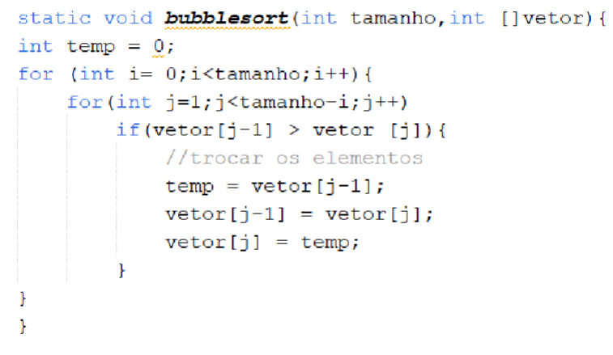Exemplo:
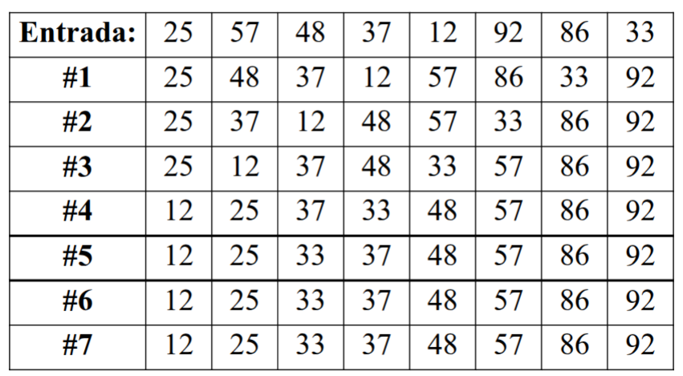Atividade:
Melhore o desempenho do bubblesort implementado analisando critérios de parada.
- Conte o número de trocas do original e da nova implementação e imprima ao final.
- Conte o numero de iterações e imprima ao final.
2. Quick Sort (Ordenação Rápida)

O Quicksort é um dos algoritmos de ordenação mais eficientes para listas grandes e desordenadas. Usa o conceito de “dividir para conquistar”. Ele funciona escolhendo um elemento como 'pivô' e particionando o array em torno desse pivô. Os elementos menores que o pivô são colocados à sua esquerda, e os maiores à sua direita, e chama a si mesmo recursivamente para ordenar as subpartes.
Complexidade:
- Pior Caso: O(n²) (ocorre com pivôs ruins, como escolher sempre o menor ou maior elemento)
- Caso Médio: O(nlog n)
- Melhor Caso: O(nlog n)
Uso:
Um dos algoritmos de ordenação mais rápidos e mais usados na prática. É preferido para arrays na memória principal.
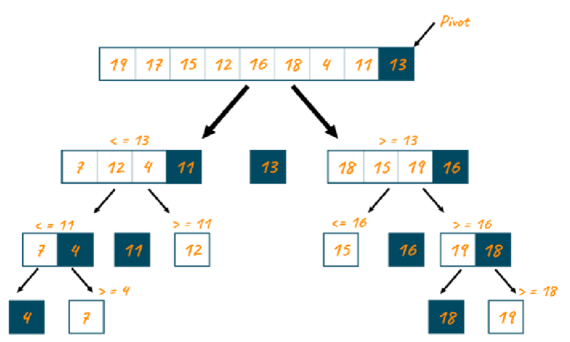Passo a passo:
O quicksort escolhe um pivô (geralmente o primeiro elemento, mas pode ser qualquer elemento).
- Reorganiza o vetor: todos menores que o pivô vão para a esquerda e todos maiores para a direita.
- O pivô é colocado em sua posição correta.
- O algoritmo é chamado recursivamente para a parte à esquerda do pivô e a parte à direita, até dividir o vetor todo.
Código:
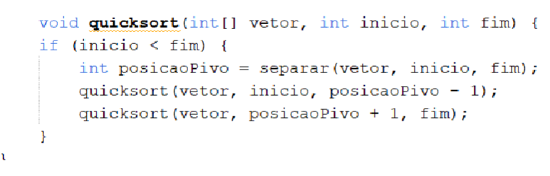 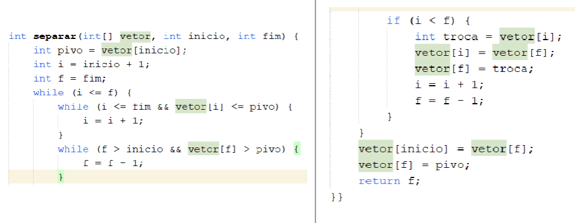Atividade:
- Tente rodar “na mão” a seguinte sequência: {3,2,8,1,5}
- Qual a saída na terceira rodada?
3. Cocktail Sort

É uma variação do Bubble Sort. Ele melhora a eficiência do Bubble Sort ao ordenar em ambas as direções (frente e verso) em cada passagem. Isso permite que os elementos pequenos no final da lista se movam mais rapidamente para o início.
Complexidade:
- Pior Caso: O(n²)
- Caso Médio: O(n²)
- Melhor Caso: O(n) (quando a lista já está quase ordenada)
Melhor desempenho para certos casos:
- O Cocktail Sort pode ser mais rápido quando a maioria dos elementos já está no lugar e há apenas um pequeno número de elementos "fora de lugar" no final da lista. A passada bidirecional ajuda a mover esses elementos rapidamente para suas posições finais.
Mais eficiente na movimentação de elementos:
- Por mover para frente e para trás, o Cocktail Sort é mais rápido para trazer elementos que estão no final da lista para o início e vice-versa
Uso:
Raramente usado na prática, mas pode ser ligeiramente mais rápido que o Bubble Sort em listas onde os elementos estão "presos" nas extremidades opostas.
Código:
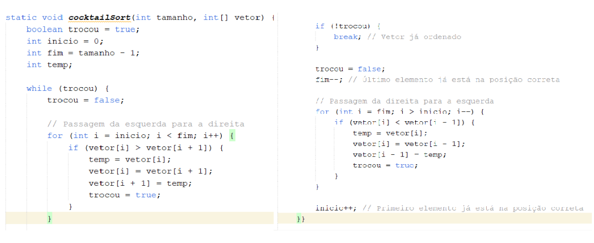4. Selection Sort (Ordenação por Seleção)

O Selection Sort divide a lista em duas sublistas: a ordenada (à esquerda, inicialmente vazia) e a não ordenada (à direita, com todos os elementos). O algoritmo encontra o menor elemento na sublista não ordenada e o troca com o primeiro elemento da sublista não ordenada.
Complexidade:
- Pior Caso: O(n²)
- Caso Médio: O(n²)
- Melhor Caso: O(n²)
Uso:
Não é eficiente para grandes listas, mas é útil em situações onde a escrita (trocas) na memória é custosa, pois ele minimiza o número de trocas (apenas uma troca por iteração completa).
Código:
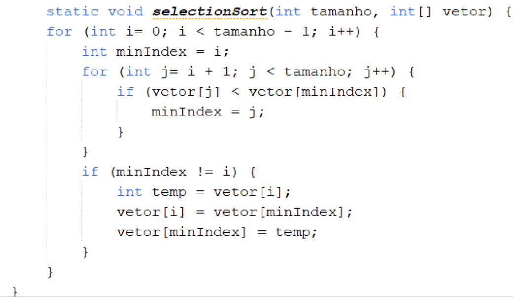Atividade:
Compare com o algoritmo anterior e verifique quem faz mais trocas e quantas iterações foram necessárias.
5. Insertion Sort (Ordenação por Inserção)
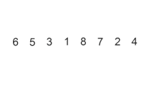O Insertion Sort constrói a lista final ordenada um item de cada vez. Ele itera sobre os elementos de entrada e insere cada um em sua posição correta dentro da sublista que já está ordenada, deslocando os elementos maiores para a direita.
Complexidade:
- Pior Caso: O(n²)
- Caso Médio: O(n²)
- Melhor Caso: O(n) (quando a lista já está ordenada)
O insertion sort geralmente é considerado melhor do que o bubble sort e o selection sort para a maioria dos cenários simples, especialmente vetores pequenos ou quase ordenados.
Desempenho prático: Embora os três algoritmos tenham desempenhos teóricos parecidos ,o insertion sort é mais rápido na prática, pois realiza menos movimentações e comparações, especialmente se o vetor já está quase ordenado.
O melhor caso do insertion sort é quando o vetor já está ordenado, enquanto bubble e selection continuam realizando várias comparações mesmo neste cenário.
Movimentação de dados: O selection sort faz o menor número de trocas, mas mais comparações; já o bubble sort faz muitas trocas, sendo geralmente o mais lento.
Uso:
Extremamente eficiente para listas pequenas e para listas que já estão quase ordenadas. É comumente usado como parte de outros algoritmos mais avançados (como o TimSort, que combina Merge Sort e Insertion Sort).
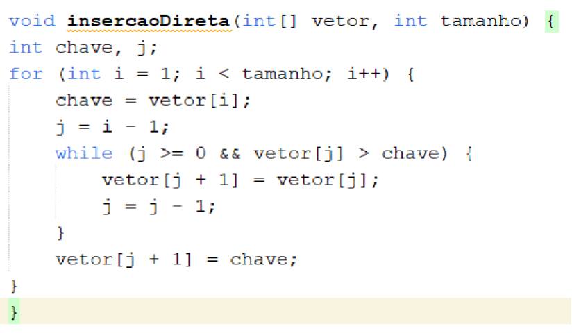6. Merge Sort (Não cai na prova)
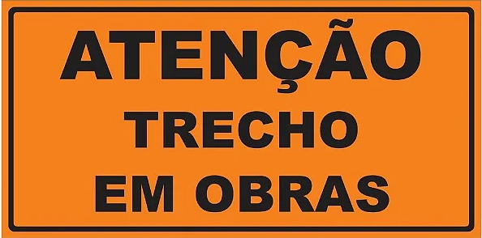 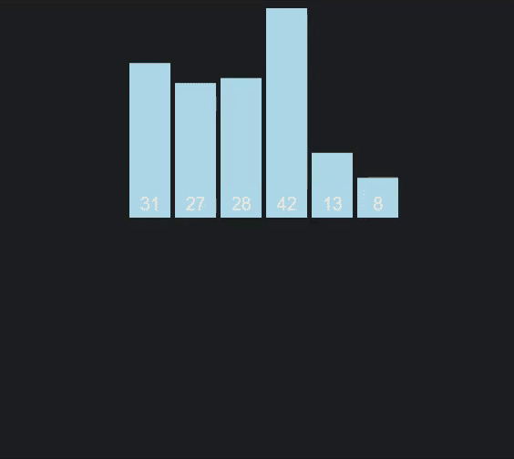O Merge Sort é um algoritmo de divisão e conquista que garante uma complexidade $O(n \log n)$ em todos os casos. Ele divide o array recursivamente em metades até que cada sublista contenha apenas um elemento (que é, por definição, ordenado). Em seguida, ele mescla as sublistas de volta de forma ordenada.
Complexidade:
- Pior Caso: $O(n \log n)$
- Caso Médio: $O(n \log n)$
- Melhor Caso: $O(n \log n)$
Uso:
Garante desempenho consistente em qualquer cenário. É usado para ordenar listas encadeadas de forma eficiente e é um dos principais algoritmos de ordenação externa.
7. Comb Sort (Ordenação Pente)

O Comb Sort é um algoritmo de comparação que melhora o Bubble Sort eliminando os valores pequenos perto do fim da lista (as "tartarugas"). Ele faz isso usando um 'gap' (intervalo) maior do que 1 entre os elementos comparados. O gap é reduzido por um fator (geralmente 1.3) a cada iteração até se tornar 1.
Complexidade:
- Pior Caso: $O(n^2)$
- Caso Médio: $O(n \log n)$ (rápido na prática)
- Melhor Caso: $O(n \log n)$
Uso:
Pode ser considerado um substituto mais eficiente para o Bubble Sort e é frequentemente usado em conjunto com o Quick Sort para ordenar pequenas partições.
8. Gnome Sort (Ordenação Gnomo)
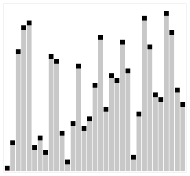O Gnome Sort é um algoritmo simples de comparação, semelhante ao Insertion Sort, mas que evita loops aninhados explícitos. Ele funciona garantindo que o par de elementos adjacentes na posição atual esteja em ordem. Se não estiver, ele os troca e recua para verificar a ordem anterior; se estiver, ele avança.
Complexidade:
- Pior Caso: $O(n^2)$
- Caso Médio: $O(n^2)$
- Melhor Caso: $O(n)$ (quando a lista já está ordenada)
Uso:
Principalmente valorizado por ser muito fácil de implementar (tem a linha de código mais curta de todos os $O(n^2)$ quadráticos) e por sua estabilidade.
9. Bucket Sort (Ordenação por Balde)
O Bucket Sort, ou Ordenação por Balde, é um algoritmo de ordenação não-comparativa. Ele divide o array de entrada em um número finito de "baldes" (buckets). Cada balde é então ordenado individualmente (geralmente usando Insertion Sort) e, por fim, todos os baldes são concatenados para formar o resultado ordenado.
Complexidade:
- Pior Caso: $O(n^2)$ (se a distribuição for muito desigual)
- Caso Médio: $O(n + k)$ (onde k é o número de baldes, idealmente próximo de n)
- Melhor Caso: $O(n + k)$
Uso:
Mais eficaz para arrays onde os elementos de entrada estão uniformemente distribuídos em um intervalo. É comum em processamento de dados onde a distribuição dos valores é conhecida.